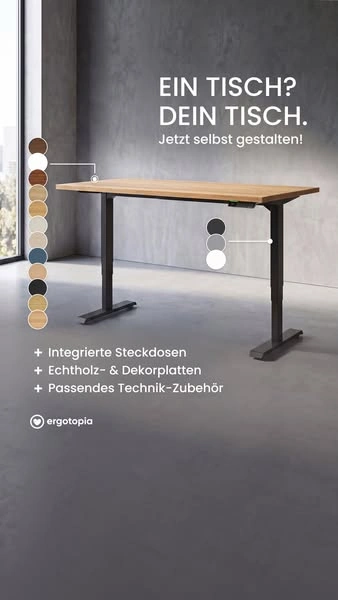

ERGO-META-924680070679562

ERGO-META-924680070679562ERGO-META-924680070679562 · Ergotopia · Meta · 广告中的静态图片
品牌 / 平台：Ergotopia / Meta。A类真实广告。图像性质：广告中的静态图片。范围：升降桌核心或使用场景。
图片像素：338×600，比例169:300。文件：01_Original_Competitor_Ads/Ergotopia/Meta/ERGO-META-924680070679562.webp。
原广告来源。广告记录：ERGO-MAD-924680070679562。日期证据：德国公开列表中投放中，采集日可见；未公开停止日期。首次：2026-07-20；最后：未公开/未读取。首次/最后边界不表示连续投放。
视觉描述
Ergotopia 的质感产品布景素材，前方三分之四，全景。主产品包围框占画面面积粗估约15–35%，主体在中，焦点为产品与选项色点。画面为黑、深灰、木、白配色，定向光与深灰渐变。无人；用色点表达可选项。文字位置：顶部定制标题，左右色点，下部功能。主要表达尺寸与配色选择、产品细节。
背景复杂度：低。留白：按原图文字区与产品区的分工理解，不逐像素复刻。主体包围框面积的人工粗估区间，含桌脚间空白，不是像素测量。
人物：无完整使用人物。交互：由桌面物件、桌高或部位关系表达使用；不从静帧推断运动性能。真实感判断：布景或棚拍感较强；是否真实摄影/渲染未做鉴定。
创意类型：对比展示型、卖点信息图型。卖点：尺寸与配色选择、产品细节。
创意逻辑与需求
以少量选项提示降低复杂配置的理解成本；Furniwell 只展示已核验选项。
购买需求：尺寸与配色选择、产品细节相关的选择与使用疑问；这是需求匹配推断，不是广告转化证明。
可借鉴与变化
参考什么：原图的前方三分之四、全景与“产品与选项色点”的关系。以少量选项提示降低复杂配置的理解成本；Furniwell 只展示已核验选项。
如何改变：保留定向光塑造轮廓的方法，换成深蓝吸音墙前的白色整桌和一份正在核对的项目稿；人物站姿轻写备注，侧前方中景。改变明暗对象、动作与需求，不沿用质保证明、认证或评价。
匹配产品：Economy Solid 白色 120×60 cm; Economy Solid 白色 140×70 cm; Dual Ultra X 白色 180×80 cm。
不照搬：Logo、品牌配色系统、评价/星级、获奖/认证、价格/保证、专有结构与未经核验功能；不得把竞品图片直接改标发布。
文字说明：标题/正文合计短摘录最多25词；纯图文内容见原图。未读取的标题/正文不补写。
图像质量说明
保存可访问的最长边600像素版本；同一素材无缩放版本返回403，未继续重试或插值放大。